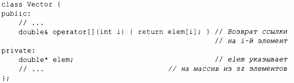
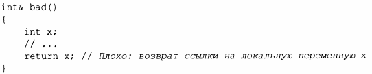
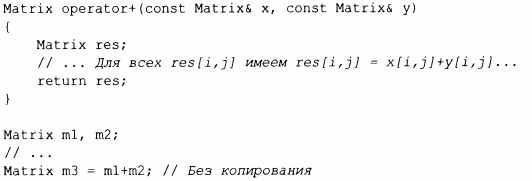
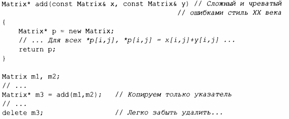
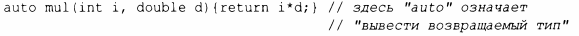

⇐3.6.1 Передача аргументов Содержание 3.6.3 Структурное связывание⇒
Как только мы вычислили результат, его нужно вывести из функции и вернуть вызывающей функции. И вновь по умолчанию возврат значения выполняется с помощью копирования, и для небольших объектов это оказывается идеальным решением. Мы возвращаем результат "по ссылке" только тогда, когда хотим предоставить вызывающей функции доступ к сущности, не являющейся локальной для этой функции. Например:
i-й элемент Vector существует независимо от вызова оператора индекса, поэтому мы можем вернуть ссылку на него.
С другой стороны, по завершении функции ее локальные переменные исчезают, поэтому мы не должны возвращать указатель или ссылку на них:
К счастью, все основные компиляторы С++ в состоянии обнаружить эту очевидную ошибку в bad()
Возврат ссылки или значения "малого" типа эффективно, но как же передавать из функции большие количества информации? Рассмотрим следующий код:
Матрица Matrix может быть очень большой, с дорогостоящим копированием даже на современном аппаратном обеспечении. Поэтому, чтобы избежать копирования, мы создаем перемещающий конструктор Matrix (§5.2.2), а операция перемещения Matrix из оператора operator+ () оказывается очень дешевой. Нам не требуется возвращаться к ручному управлению памятью:
К сожалению, возврат больших объектов путем возврата указателя на них весьма распространен в старом коде и является основным источником трудно обнаруживаемых ошибок. Не пишите такой код! Обратите внимание, что operator+ () так же эффективен, как и add (),но гораздо проще для определения, проще в использовании и менее подвержен ошибкам.
Если функция не может выполнить требуемую задачу, она может сгенерировать исключение (§3.5.1 ). Это может помочь коду избежать переполненности проверками кодов ошибок для "исключительных проблем".
Тип возвращаемой функции можно вывести из возвращаемого значения. Например:
Это может быть удобно, в особенности для обобщенных функций (шаблонов функций, §6.3.1) и лямбда-выражений (§6.3.3), но их следует использовать осторожно, потому что выведенный тип не предлагает стабильного интерфейса: изменение в реализации функции (или лямбда-выражения) может изменить этот тип.